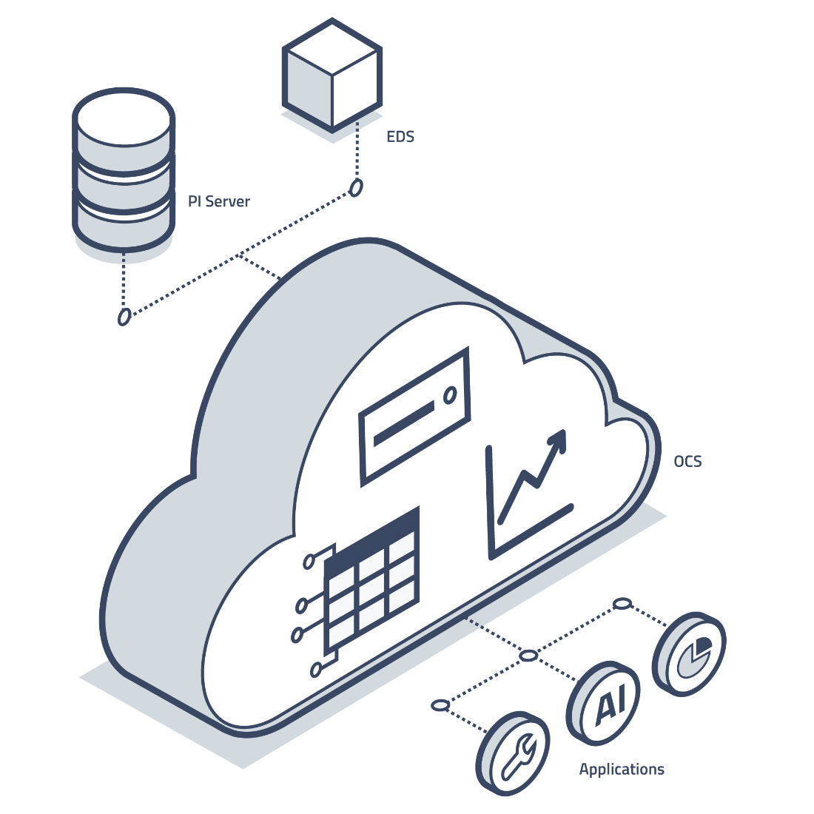
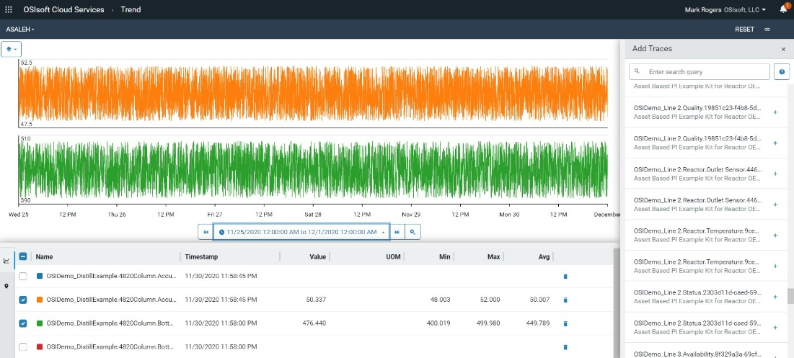
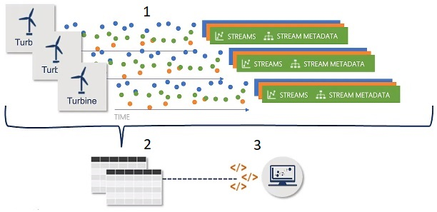

What does OSIsoft Cloud Services do?

OSIsoft Cloud Services (OCS) consists of several different areas of core functionality: tenant management, data collection, data organization, and data analysis. The following sections discuss each in detail:
- Tenant management - Explains basic concepts in managing OCS, including clients, users, roles, roles-based access control and discusses how administrators can customize OCS based on organizational requirements
- Data collection - Summarizes techniques to collect and feed data from multiple sources across your organization into a namespace within OCS
- Data organization - Provides a high-level description of how OCS stores and retrieves operational data
- Data analysis - Provides users with analytical tools to sort and visualize OCS data.
- Data science enablement - Highlights the capabilities of OCS tools for data grouping and organization to enable the use of third-party data science applications
Tenant management
You can customize OCS to meet your organization's requirements and needs. Administrators can create users and clients, define and assign roles, and manage namespaces for their tenant. Authentication and authorization are also customizable on OCS. Configuring the access control list (ACL) for an OCS resources, administrators can define the permissions to a resource. Generally, only administrators should have access to tenant management features. Administrators can perform tenant management using the OCS REST API or the OCS portal. The OCS portal is a web-based user-interface for managing and monitoring your tenant as well as for namespace resources, streams and assets.
Tenant
A tenant is the root-level resource in OCS; all other resources are scoped to a tenant. Tenant-level resources deal with identity and access control. You can add users to a tenant with one or more identity providers. Roles are defined for a tenant and can be assigned to users or clients to manage access to resources. A tenant contains namespaces where data is managed.
Namespace
A namespace is a logical unit of organization for data within a tenant. Before any data can be collected in OCS, you must create a namespace for that tenant. Each tenant can contain more than one namespace. Namespaces help you create separate instances of your data and resources within a tenant. Resources within a namespace do not affect other namespaces within that tenant. In practice, namespaces may correspond to a specific set of infrastructure assets, but they commonly correspond to virtual partitions within a single set of assets dedicated to a specific tenant.
Identity
Identity is the authentication factor used to verify a user or client that requests access to OCS. OCS identity services provide the following functions:
- Authenticate users with a local account store or through an external identity provider
- Provide session management and single sign-on
- Authenticate client applications
- Issue identity and access tokens to client applications and users
- Validate access tokens
User
A user is an individual identity that represents a person using OCS. When users log in to OCS, they authenticate through an identity provider, such as Google or Azure Active Directory. The identity provider authenticates the user, and upon successful authentication, passes a token back to OCS verifying the identity of the user. This identity is used by OCS to grant access for a specific time period.
Clients
Clients have programmatic access to OCS resources through OCS APIs. There are two primary client types:
Client credential clients – The most common type of OCS client, used for server-to-server communication without the presence or intervention of a user. Examples include PI Adapters or the Edge Data Store sending data to OCS. This type of client is issued a client ID and secret. After authentication, the client is granted an access token with a defined lifetime.
Authorization code clients – Used by web-based, mobile, and desktop applications, this client type requires user interaction. Users authenticate with an identity provider. Authorization code clients support silent refresh, which allows the user to automatically receive a new access token, providing for uninterrupted access to the application.
Roles
A role is a representation of an identity’s job function that determines whether the user can have access to resources needed to accomplish a job. You can assign multiple roles to a user or client-credential client. The user or client’s role, in combination with the access control list (ACL) for a resource or service, determines access permissions to that resource or service. The Tenant Administrator creates roles and assigns those roles to users and clients.
For both users and clients, roles authorize API requests for access, such as access to data streams. All clients have the Tenant Member role, which provides Read access to resources.
Identity provider
Identity providers manage databases of user records and authenticate users against the authentication factors in their databases. This allows users to be granted access to the service provider using the credentials the identity provider manages but without sharing actual login details with OCS.
Authentication
Authentication is the process of verifying the identity of a user and confirming that the user is an approved entity for OCS. This verification process is performed by the identity provider.
Authorization
Authorization is the process of determining the appropriate access level for a user or client for each OCS resource and service. Two factors determine the level of access: the role that the user or client is assigned at authentication and the corresponding access control list that grants a level of access to a role for each resource and service.
Access control list
Each OCS service and resource has an access control list (ACL) that defines how much access is granted to assigned roles. The OCS Administrator configures each ACL and specifies types of permissions for each role. When a request is made to a specific OCS resource, the role assigned to the requestor (whether a user or client) is compared to the ACL for that resource to determine whether the request should be authorized.
The types of permissions granted to roles are as follows:
- Read
- Write
- Delete
- Manage Access Control: Ability to modify the access control list of the resource
- Owner: An identity that has full permission level
Data Collection
After defining tenants, setting permissions and access levels for users, and creating clients for programmatic access, you can configure OCS for data collection. Data collection allows you to bring data from multiple sources and systems across your organization into a namespace within OCS.
Collection methods
The type of data, the location of that data, and the way that a particular source sends data all affect how you can collect that data in OCS. You can choose the data collection technology that best meets your specific needs. These technologies include:
PI to OCS
The PI to OCS collection method transfers PI time series data from a local PI Server to OCS. The PI to OCS Agent is installed and configured directly on a designated device.
Note: OSIsoft recommends installing the PI to OCS Agent and PI Server on seperate devices to avoid the two systems competing for resources.
The PI to OCS Agent creates types and streams in OCS based on the PI Tags mapped from PI Data Archive.
Custom OMF applications
OSIsoft Message Format (OMF) is a platform-independent format for passing JSON messages to OCS over HTTP.
For programmatic access to data, you can use OMF to develop data acquisition applications on platforms and in languages for which there is no native support. This allows you to integrate data collection directly into a device or asset.
OMF topics aggregate OMF messages received from one or more clients and make them available for consumption. An OMF subscription consumes OMF messages from a topic and forwards them to a data store. Multiple subscriptions can retrieve OMF messages from a single topic. Together, these two components make up an OMF connection, which allows collection from a client into an OCS namespace.
OMF itself does not define or depend on any binary message protocol, such as HTTP, AMQP, or Kafka. Instead, it is based on an abstract message type, where a message consists of a set of key/value pairs, which may include binary files, configuration files, and batch or Shell scripts. You can construct OMF messages using any message protocol that defines headers and bodies.
Refer to OMF Message Format for additional information about the OMF specification.
Edge Data Store
The Edge Data Store (EDS) is a software component that collects sequential data from data sources and stores it locally until it can be transferred to permanent storage. It enables you to store data from a device locally and make the data available for local querying. This is useful for displaying data trends on an edge device.
OCS can collect data from EDS via the OSIsoft Message Format (OMF). Edge Data Store currently includes two built-in protocol adapter components, Modbus and OPC UA, and a storage component that also collects and sends OMF. Multiple data sources, referred to as adapter component instances, are supported in protocol components.
PI Adapters
PI Adapters are software components that collect sequential data from data sources and send it to OCS or PI Server or both. Use PI Adapters for collecting data from standard systems and protocols.
Programmatic REST API
The OCS programmatic REST API reads and writes data. It supports JSON format and platform-independent data and retrieval.
Data organization
After setting up data collection, you can use the Sequential Data Store (SDS) to store, retrieve, and organize any type of streaming data. Typically, developers use the SDS as part of their customized applications.
To organize and use the data in the SDS, you need to understand the basic features of the system:
Types
A type, also called an SDS type, defines the structure of data to be collected in OCS. A type is analogous to a template that defines each instance in a stream of data.
For example, if you want to collect three measurements streamed from a device (longitude, latitude, and speed) and you want to collect those measurements over a period of time, you can define a type to include properties for longitude, latitude, speed and a timestamp. Collectively, these properties define the structure of the data you are storing. While this is a simple example, OCS lets you create much more complex types.
A type can consist of many properties, but one property must function as the primary index. Time is frequently used as the primary index, effectively time-stamping all corresponding properties in each data instance. However, the primary index is not limited to time stamps; it can be any type of sequential data such as depth.
After you create a type, you cannot change it. If you want to change a type, you must delete the existing type and create a new one to ensure that no stored data is invalidated. However, you can only delete a type if no streams, views, or other types reference it.
OCS provides a simple user interface for creating types. Alternatively, you can create types using programming tools provided by OSIsoft. For an automated programmatic approach, OSIsoft offers .NET client libraries available in NuGet packages. For a manual approach, OSIsoft provides code samples in different programming languages, including Python, Java, and JavaScript. The JSON file format is used to specify the properties and related information in each type.
Streams
A stream, also called an SDS stream, is a series of ordered events. Each event is an instance of a type. Collectively, the stream of data forms the structure that the type specifies.
Streams organize data brought from another system into OCS. To define a stream, you must first define a type, which specifies the structure of the data you want to stream into an OCS namespace. Every stream has a unique identifier. You can have many streams based on the same type, but each stream must have its own unique identifier.
There are multiple techniques for sending data to OCS. See Data Collection.
Each stream is associated with a namespace. You can associate one or more streams with the same namespace. However, to move data between namespaces, you must read data out from one namespace and write it into another namespace.
You can categorize streams using metadata, which is a dictionary of key value pairs used to store additional information. Metadata is not real-time information, and it is not updated at high frequency. Typically, metadata is static information that provides context for a stream.
You can also use tags to assign information to a stream. A tag is a string value. For example, a tag might identify a region.
REST APIs give you the ability to read and write stream data programmatically. In addition, if you are using the .NET framework, OSIsoft offers client libraries to help you create and use streams.
Stream views
Because types cannot be modified, OCS provides a flexible mechanism for viewing data in a stream view. A stream view is a logical overlay for stream data.
For example, a process engineer and a maintenance technician might want to see different data that exists in the same stream. You cannot change the structure of data in a stream, but a stream view allows you to see a subset of the data in a stream. Using stream views, you can change the appearance of the data stream to meet the needs of both users without changing the original data.
Stream views can perform additional functions, such as convert units of measure and change names so the terminology that is displayed is more appropriate for a particular audience.
To create a stream view, designate a souce type that contains the desired properties. Then, map properties in the source type to properties in the target type. Properties must have the same data type to be mapped. The source type and the target type must be in the same namespace, and they must exist before you define the stream view.
OCS provides a graphical interface for setting up stream views or you can use REST APIs to define stream views programmatically. If you are using the .NET framework, OSIsoft also offers client libraries to help you create and use stream views.
Data analysis
After defining types, streams and stream views as needed, you can use the analytical tools provided by OCS to sort and visualize data from these objects.
Two analytical tools are available in OCS:
Trend
The Trend feature converts stream data to a graphic view, which can reveal trends, high points, or trouble spots. Use Trend to select data streams in a namespace, specify a time range, and then render a graph of those data values.
The following example shows stream data for two streams over a selected period of several days:

Assets
Assets are a digital twin of physical entities in the real world. An asset can consist of data from one or more streams.
The assets in the example below represent trucks in a fleet, with multiple data streams associated with each. You can select a vehicle asset to visualize selected data streams and properties for troubleshooting and analysis.

You can display the variation in the pressure of the suspension cylinders on each truck over time, identify those trucks whose cylinder pressure is outside the accepted range, and proactively deal with potential problems.
Assets are a useful way to organize and contextualize data streams. They provide a means of organizing multiple PI to OCS streams under a single asset. You could create an asset with streams measuring data for thermostats, ventilation equipment, lighting systems, and security.
You can create assets on an ad hoc basis or create them from an asset type, a template for creating similar assets.
Users can use API calls to define asset rules, which bulk create or update assets according to matching patterns in stream names and metadata. Asset rules are applied to existing applicable streams, and whenever a stream is created, updated, or deleted.
Data science enablement
OCS allows you to group and organize operational PI, IoT, and OCS data. By arranging data into forms that can be consumed by third-party data science applications, data scientists can conduct deep analysis to detect unrealized patterns and insights. OSIsoft data science enablement efforts allow for better informed planning, predictive maintenance, and operational optimization.
Two methods are available in OCS, each of which works dynamically, continuing to filter and order data after they are in place. These methods include the following:
- Metadata rules - Metadata rules assign metadata to streams matching defined stream name patterns.
- Data views - Data views order, index, and organize data from multiple streams.
Metadata rules
You select a stream name to use as a name pattern and assign metadata to selected stream name parts, such as a plant location or device category. The resulting stream name pattern with assigned metadata parts defines a metadata rule. The metadata rule assigns the defined metadata to all streams in a given namespace that match the stream name pattern.
The following diagram shows metadata in the context of several different but similar data streams:

The diagram above shows three data streams for turbines named GEO1 and GEO2.
- The data in each stream is color-coded, and streams with matching naming patterns are the same color.
- The basic description of the stream data is encoded in the stream name, but it can be difficult to understand. Use metadata rules to decode this information. For example, the metadata rule delineates the stream name, GEO1_P.ACT_PV, as GEO1, Turbine, and ACT_PV, Active Power.
- A metadata rule based on this stream naming pattern can assign metadata for all turbines in each matching stream.
A metadata rule assigns the defined metadata to any matching streams in the selected namespace, as well as matching streams that are subsequently added to the namespace.
Data views
Data views are subsets of data from one or more streams. Data scientists typically query large datasets and need to index, sort, and organize data into specific subsets. With data views, data items can be selected, ordered, and grouped by field. Time indices and time intervals are also configurable for display and analysis.
Data views serve as a bridge between raw OCS data and data science applications. Use an API or the OCS portal to create data views to arrange data for consumption by a third-party data science applications.
The following diagram depicts multiple streams organized into a data view that a third-party data science application can consume:
- Data streams from three wind turbines contain metadata assigned by a metadata rule.
- Create a data view in OCS based on streams containing the specified metadata, select specific data elements from the streams, and order and index them as needed.
- Ordered and normalized data is then consumable by data science applications for in-depth analysis.

Note: You can reference metadata defined in a metadata rule when creating a data view. This action will include all streams containing the specified metadata.